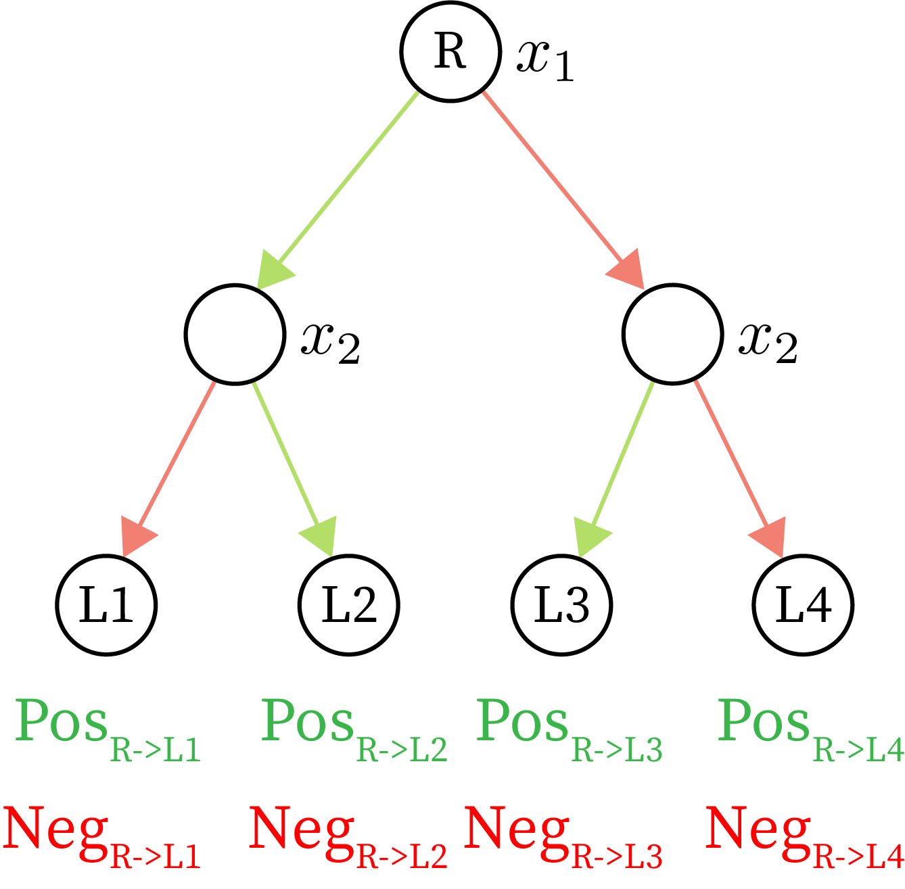

Introduction
Nowadays, machine learning (ML) is widespread. In this field, one of the most popular machine learning model type is tree-based models. As evidence, a recent survey of data scientists and researchers found that tree models were both the second and third most popular class of method, beaten only by Logistic Regression (Figure 1). Although small tree models can be interpretable
In order to explain these models, we use Shapley values - a unique game-theoretic solution for spreading credit between features. First, we discuss SHAP values, an extension of Shapley values to machine learning models (Section 1). However, exactly computing SHAP values for an arbitrary model is NP-hard
What is the goal of this article?
Given that there is a long history of model explanations going awry when users do not understand what an explanation means (e.g., p-values for linear models
1. What's in a SHAP value?
In this section, we describe Shapley values and a few versions that have been used to explain machine learning models. Then, we use a linear model example to justify a specific extension of the Shapley values. With this formulation, we show how obtaining the SHAP values reduces to a average over so-called single reference SHAP values that can be thought of as explanations with respect to a single foreground sample (explicand) and a single background sample (reference).
1.1 Back to basics: Shapley values
Shapley values are a method to spread credit among players in a "coalitional game". We can define the players to be a set \(N=\{1,\cdots,d\}\). Then, the coalitional game is a function that maps subsets of the players to a scalar value: $$ v(S):2^N\to\mathbb{R}^1 $$
To make these concepts more concrete, we can imagine a company that makes a profit \(v(S)\) that is determined by what combination of individuals they employ \(S\). Furthermore, let's assume we know \(v(S)\) for all possible combinations of employees. Then, the Shapley values assign credit to an individual \(i\) by taking a weighted average of how much the profit increases when \(i\) works with a group \(S\) versus when he does not work with \(S\). Repeating this for all possible subsets \(S\) gives us the Shapley Values: $$ \overbrace{\phi_i(v)}^{\text{Shapley value of }i}=\sum_{S\subseteq N\setminus\{i\}}\underbrace{\frac{|S|!(|N|-|S|-1)!}{|N|!}}_{\text{Weight }W(|S|,|N|)}(\overbrace{v(S\cup\{i\})-v(S)}^{\text{Profit individual }i\text{ adds}}) $$ Figure 2 computes this summation for an arbitrary coalitional game with three players.
| Coalitional game | ||
| Subset \(S\) | Profit \(v(S)\) | |
| \(\{\}\) | ||
| \(\{Ava\}\) | ||
| \(\{Ben\}\) | ||
| \(\{Cat\}\) | ||
| \(\{Ava,Ben\}\) | ||
| \(\{Ava,Cat\}\) | ||
| \(\{Ben,Cat\}\) | ||
| \(\{Ava,Ben,Cat\}\) | ||
| Shapley values | |
| \(\phi_{Ava}(v)\) | 0 |
| \(\phi_{Ben}(v)\) | 0 |
| \(\phi_{Cat}(v)\) | 0 |
No credit.
The Shapley values consider how much an individual increases profit when they work together with all other possible teams. Furthermore, they are a unique solution to spreading credit as defined by several desirable properties
- Local Accuracy/Efficiency: The sum of Shapley values for all employees adds up to the profit with all employees minus the profit with no employees: $$ \sum_{i\in N} \phi_i(v)=v(N)-v(\{\}) $$
- Consistency/Monotonicity: If an employee \(i\) always increases company \(v_1\)'s profit more than they would company \(v_2\) for all teams of other employees, then \(i\)'s attribution for \(v_1\) should be greater than or equal to their attribution in \(v_2\): $$ v_1(S\cup {i})-v_1(S)\geq v_2(S\cup {i})-v_2(S) \forall S \implies \phi_i(v_1)\geq \phi_i(v_2) $$
- Missingness: Employees \(i\) that don't help or hurt the company's profit must have no attribution. $$ v(S\cup {i})=v(S)\forall S\implies \phi_i(v)=0 $$
In
1.2 SHAP values
SHAP values are a variant of Shapley values to explain ML models. For SHAP values, the game \(v(S)\) is now related to a machine learning model \(f(x)\) and the set of players is now a feature vector \(x:=\{x_1,\cdots,x_d\}\in\mathbb{R}^d\).
In contrast, Shapley values define a game's output \(v(S)\) to be the value of the game with some players "present" and the remaining players "missing". Here, "missing" is naturally defined: whether or not a player \(i\) is present in the set \(S\) (or, as in our example, whether an employee was working for the company).
In comparison, ML models generally require a fixed length input with continuous values which makes setting features to be "missing" or "present" less straightforward. One simple approach is to impute the "missing" features by masking them by a fixed background sample \(x^b \in \mathbb{R}^d\). $$ v(S)=f(h^S)\text{, where } h^S_i = x_i\text{ if }i\in S\text{, }h^S_i = x^b_i\text{ otherwise} $$ For instance, if we want to set the feature Height to "missing", we could replace it with a specific background value. One natural option of background value is zero. However, this is unsatisfying because a Height of zero is impossible. Another option of background value could be the average human height. This is arguably a better choice, however it means that explanations for people who are exactly average height will be biased to give no weight to height. In fact, masking with any single background sample will introduce bias to SHAP values. Alternatively, instead of using a single background sample, we can use an entire background distribution to define missingness.
Then, a very natural approach to impute features is with conditional expectation. Instead of simply replacing "missing" features with a fixed value, we condition on the set of features that are "present" as if we know them and use those to guess at the "missing" features. If we define \(D\) to be the background (underlying) distribution our samples are drawn from, the value of the game is: $$ v(S)=\mathbb{E}_D[f(x)|x_{S}] $$
One caveat is that getting this conditional expectation for actual data is very difficult. Furthermore, even if you do manage to do so, the resulting explanations can end up having undesirable characteristics (more on this later). Because our goal is to focus on explaining the model itself, an arguably more natural approach is to use causal inference's interventional conditional expectation:
$$
v(S)=\mathbb{E}_D[f(x)|\text{do}(x_{S})]
$$
The do notation is causal inference's do-operator
| Linear | |
| Model | |
| \(\beta_1\) | |
| \(\beta_2\) | |
| \(\beta_3\) | |
| \(\beta_4\) | |
| Covariance \(C\) | ||||
| \(x_1\) | \(x_2\) | \(x_3\) | \(x_4\) | |
| \(x_1\) | ||||
| \(x_2\) | ||||
| \(x_3\) | ||||
| \(x_4\) | ||||
| Foreground | |
| Sample | |
| \(x_1\) | |
| \(x_2\) | |
| \(x_3\) | |
| \(x_4\) | |
| \(\phi_1\) | \(\phi_2\) | \(\phi_3\) | \(\phi_4\) | |
| SHAP Values (CE) | 1 | 2 | 3 | 4 |
| SHAP Values (ICE) | 1 | 2 | 3 | 4 |
Independent variables.
- The function is linear (\(f=\beta_1 x_1 + \beta_2 x_2 + \beta_3 x_3 + \beta_4 x_4\))
- The data-generating distribution is multivariate normal (\(D\sim \mathcal{N}_4(0,C)\))
In Example 2 we highlight tradeoffs between the conditional expectation and the interventional conditional expectation by devising a simple example with a linear function and a multivariate normally distributed background distribution. In general, computing the conditional expectation SHAP value is difficult; however, because we choose a multivariate normal distribution the conditional expectation is well defined. In addition, we choose a linear function because the conditional expectation of the function equals the function applied to the conditional expectation.
1.3 Single reference SHAP values
As we saw earlier, to compute \(\phi_i(f,x^f)\) we evaluate the interventional conditional expectation. However, this depends on a background distribution \(D\) that the sample we are explaining, otherwise known as the foreground sample \(x^f\), will be compared to.
One natural definition of the background distribution is a uniform distribution over a population sample. For instance, in machine learning, you could assign equal probability to every sample in your training set. With this background distribution, we can re-write the SHAP value as an average of single reference SHAP values
In summary, we reduce the problem of obtaining \(\phi_i(f,x^f)\) to an average of simpler problems \(\phi_i(f,x^f,x^b)\) where our foreground sample \(x^f\) is compared to a distribution with only one background sample \(x^b\). This new problem formulation will prove to be an easy problem to tackle for tree models.
2. Algorithm
Now our goal is to tackle the simpler problem of obtaining single reference SHAP values \(\phi_i(f,x^f,x^b)\) that are attributions for a single foreground (sample being explained) and background sample (sample being compared to). In this section, we consider a specific foreground sample, background sample, and tree as specified in Example 3.
Tree Parameters
| Variable | Foreground Sample \(x^f\) | Background Sample \(x^b\) | ||
| \(x_1\) | ||||
| \(x_2\) | ||||
| \(x_3\) | ||||
2.1 Brute force
Based on the proof in Section 1.3, the brute force approach would be to compute the following: $$ \phi_i(f,x^f,x^b)=\sum_{S\subseteq N\setminus\{i\}} \underbrace{W(|S|,|N|)}_{W}\underbrace{f(h^{S\cup \{i\}})}_{\text{\textcolor{green}{Pos} term}} {-} \underbrace{f(h^S)}_{\text{\textcolor{red}{Neg} term}}) $$
If we assume the computational cost of computing the weight \(W\) is constant, then the complexity of the brute force method is the number of terms in the summation multiplied by the cost of making a prediction (on the order of the depth of the tree \((D)\)). Then, the computational complexity of the brute force approach is \(O(D\times2^{d})\).
In order to compute \(\phi_i(f,x^f,x^b)\) for all features, we have to re-run the entire algorithm \(d\) times, giving us a complexity of \(O(d\times D\times 2^{d})\).
Example 4: Brute force algorithm for the tree and samples specified in Example 3.
Tree Parameters
Foreground & background sample
| \(x_1\) | \(x_2\) | \(x_3\) | |
|---|---|---|---|
| \(x^f\) | 0 | 0 | 10 |
| \(x^b\) | 10 | 10 | 0 |
| \(h^S\) | |||
| \(h^{S\cup i}\) |
Brute Force Values
| \(W\) | \(S\) | \(f(x_S)\) | \(S\cup{i}\) | \(f(x_{S\cup{i}})\) |
|---|---|---|---|---|
| 1/3 | ||||
| 1/6 | ||||
| 1/6 | ||||
| 1/3 |
Attribution Values
| \(\phi_1(f,x^f,x^b)\) | 0 |
| \(\phi_2(f,x^f,x^b)\) | 0 |
| \(\phi_3(f,x^f,x^b)\) | 0 |
However, if we constrain \(f(x)\) to be a tree-based model (e.g., XGBoost, decision trees, random forests, etc.), then we can come up with a polynomial time algorithm to compute \(\phi_i(f,x^f,x^b)\) exactly. Why is this the case? Well, looking at Example 4, we can see that even for explaining a single feature, the brute force algorithm may consider a particular path multiple times. However, to compute the SHAP value for a single feature, it turns out that we only need to consider each path once. This insight leads us to the naive algorithm in Section 2.2.
2.2 Naive Implementation
Before we get into the algorithm, we first describe a theorem that is the basis for this naive implementation.
Theorem 1: To calculate \(\phi_i(f,x,x^b)\), we can calculate attributions for each path from the root to each leaf. For a given path \(P\), we define \(N_P\) to be the "unique" features encountered and \(S_P\) to be the "unique" features that came from \(x\). Finally, define \(v\) to be the value of the path's leaf. Then, the attribution of the path is: $$ \phi_i^P(f,x,x^b)= \begin{cases} 0 & \text{if}\ i\notin N_P \\ \textcolor{green}{W(|S_P|-1,|N_P|)\times v} & \text{if}\ i\in S_P \\ \textcolor{red}{-W(|S_P|,|N_P|)\times v} & \text{o.w.} \end{cases} $$
Then the goal of the algorithm is to obtain \(N_P\) and \(S_P\) for each path by recursively traversing the tree. We will start by explaining the algorithm via an example:

In the naive algorithm, we maintain lists \(N_P\) and \(S_P\) as we traverse the tree. At each internal node (Cases 2-4) we update the lists and then pass them to the node's children. At the leaf nodes (Case 1), we calculate the attribution for each path. In Figure 3, we see four possible cases:
- Case 1: \(n\) is a leaf
- Return the attribution in Theorem 1 based on \(N_P\) and \(S_P\)
- Case 2: The feature has been encountered already (\(n_{feature}\in N_P\))
- Depending on if we split on \(x^f\) or \(x^b\), we compare either \(x^f_{n_{feature}}\) or \(x^b_{n_{feature}}\) to \(n_{threshold}\) and go down the appropriate child
- Pass down \(N_P\) and \(S_P\) without modifications because we did not add a new feature
- Case 3: Both \(x\) and \(x^b\) are on the same side of \(n\)'s split
- Pass down \(N_P\) and \(S_P\) without modifications because relative to \(x\) and \(x^b\) it's as if this node doesn't exist
- Case 4: \(x\) and \(x^b\) go to different children
- Add \(n_{feature}\) to both \(N_P\) and \(S_P\) and pass both lists to the \(x\) child
- Only add \(n_{feature}\) to \(N_P\) and pass both lists to the \(x^b\) child
Example 5: Naive algorithm for the tree and samples from Example 3.
Tree Parameters
Foreground & background sample
| \(x_1\) | \(x_2\) | \(x_3\) | |
|---|---|---|---|
| \(x^f\) | 0 | 0 | 10 |
| \(x^b\) | 10 | 10 | 0 |
| \(h\) |
Algorithm state
| \(S_P\) | |
| \(N_P\) |
Attribution Values
| \(\phi_1(f,x^f,x^b)\) | |
| \(\phi_2(f,x^f,x^b)\) | |
| \(\phi_3(f,x^f,x^b)\) |
Naive algorithm
The computational complexity to compute the single reference SHAP value using the naive algorithm is \(O(T_{numnodes}\times T_{depth})\) where \(T_{numnodes}\) is the number of nodes in the tree and \(T_{depth}\) is the depth of the tree. This is because in the worst case, each internal node needs to check the lists \(S_P\) and \(N_P\) which are of length \(O(T_{depth})\). Furthermore, each leaf node needs to check if \(i\) is in \(S_P\) which is also \(O(T_{depth})\) cost. Note that we can actually get rid of the multiplicative \(T_{depth}\) factor by representing \(S_P\) and \(N_P\) as arrays and keeping track of the sizes of \(|S|\) and \(|N|\).
Finally, getting the attributions for all features means that we will have to repeat the above algorithm \(|N|\) times. In the next section we present a dynamic programming approach that allows us to compute the attributions for all features simultaneously.
2.3 Dynamic Programming Implementation
For the dynamic programming version of the algorithm, we can compute the attributions for all features simultaneously as we traverse the tree by passing \(\textcolor{green}{\text{Pos}}\) and \(\textcolor{red}{\text{Neg}}\) attributions to parent nodes. Before describing the algorithm in more detail, we first present an figure that illustrates why passing up the attributions is sufficient.

| \(\phi_1(f,x^f,x^b)\) | \(\textcolor{green}{\text{Pos}_1}+\textcolor{green}{\text{Pos}_2}+\textcolor{red}{\text{Neg}_3}+\textcolor{red}{\text{Neg}_4}\) |
| \(\phi_2(f,x^f,x^b)\) | \(\textcolor{red}{\text{Neg}_1}+\textcolor{green}{\text{Pos}_2}+\textcolor{green}{\text{Pos}_3}+\textcolor{red}{\text{Neg}_4}\) |
In Figure 4, we can first observe that for each leaf, according to Theorem 1, there are only two possible values needed to compute the SHAP values (\(\textcolor{green}{\text{Pos}}\) and \(\textcolor{red}{\text{Neg}}\)). Based on the attributions for \(x_1\) we see that these \(\textcolor{green}{\text{Pos}}\) and \(\textcolor{red}{\text{Neg}}\) terms can be grouped by the left and right subtrees below \(x_1\). To generalize this example, we make the following observation:
Observation: In order to compute the attribution for any feature \(i\) it is sufficient to consider the paths that correspond to each Case 4 node's children. First, focusing on a specific Case 4 node \(n\), we know that one child is associated with \(x^f\) child and one child is associated with \(x^b\). Then, the attribution to \(n\)'s feature is: $$ \sum_{\text{paths }P\text{ under }x\text{ child}}\textcolor{green}{\text{Pos}_P} + \sum_{\text{paths }P\text{ under }x^b\text{ child}}\textcolor{red}{\text{Neg}_P} $$ Then, doing this for all nodes is equivalent to explaining all features (because SHAP values are additive).
Furthermore, this observation suggests that we can always add the \(\textcolor{green}{\text{Pos}}\) and \(\textcolor{red}{\text{Neg}}\) terms at a given node and pass them up to the parent. This information is sufficient to calculate the attributions for each upstream feature. This aggregation of the \(\textcolor{green}{\text{Pos}}\) and \(\textcolor{red}{\text{Neg}}\) terms is the dynamic programming observation that allows each upstream node to only need a constant number of operations to compute its feature's attribution.
Using this observation, we devise an algorithm that computes the attributions for all features simultaneously:
Example 6: DP algorithm for the tree and samples from Example 3.
Tree Parameters
Foreground & background sample
| \(x_1\) | \(x_2\) | \(x_3\) | |
|---|---|---|---|
| \(x^f\) | 0 | 0 | 10 |
| \(x^b\) | 10 | 10 | 0 |
| \(h\) |
Algorithm state
| \(S_C\) | |
| \(N_C\) |
Attribution Values
| \(\phi_1(f,x^f,x^b)\) | |
| \(\phi_2(f,x^f,x^b)\) | |
| \(\phi_3(f,x^f,x^b)\) |
Dynamic algorithm
The computational complexity to compute \(\phi_i(f,x,x^b)\) using the dynamic programming algorithm for all features is now just \(O(T_{numnodes})\) where \(T_{numnodes}\) is the number of nodes in the tree. In Example 6 it is easy to see that each node now only requires a constant amount of work.
Finally, our original goal was to compute \(\phi_i(f,x)\). We simply need to compute \(\phi_i(f,x,x^b)\) for many references, resulting in a run time of \(O(|D|T_{numnodes})\) where \(|D|\) is the number of samples in the background distribution. In practice, using a fixed number of about 100 to 1000 references works well.
Comparison of SHAP Methods
It should be noted that there are a number of alternative methods that aim to approximate SHAP values: Path Dependent Tree Explainer, Kernel Explainer, and Sampling Explainer. If you are explaining tree-based models, it may not be clear which one you should use. In this article we briefly overview the methods and compare them to ITE:
- Path Dependent Tree Explainer (PDTE):
- Like ITE, PDTE is also meant to obtain SHAP values for tree models.
- PDTE approximates the interventional conditional expectation based on how many training samples went down paths in the tree, whereas ITE computes it exactly.
- The computational complexity is \(O(T_{numleaves}T_{depth}^2)\). In practice, PDTE can be faster than ITE, although it may depend on the number of references or the tree depth.
- Sampling Explainer:
- A model agnostic approach to obtain SHAP values.
- An extension of Interactions-based Method for Explanation (IME)
. - This approach is sampling based and converges to the SHAP values ITE obtains, but in practice is much slower than ITE.
- Kernel Explainer
: - A model agnostic approach to obtain SHAP values.
- An extension of Local Interpretable Model-agnostic Explanations (LIME)
. - This approach is sampling based and converges to the SHAP values ITE obtains, but in practice is much slower than ITE.
For an in-depth empirical comparison of some of these methods, please refer to
Acknowledgements
This material is based upon work supported by the National Science Foundation Graduate Research Fellowship under Grant No. DGE-1762114. Any opinion, findings, and conclusions or recommendations expressed in this material are those of the authors(s) and do not necessarily reflect the views of the National Science Foundation.